2
Initializing and Planning the Layout
This section covers the following topics:
Initializing a Layout
The first step in the automated device placement and routing flow is to initialize your layout view. This involves the following steps.
-
Click Initialize Layout in the Auto Device P&R assistant to open the Initialize tab.
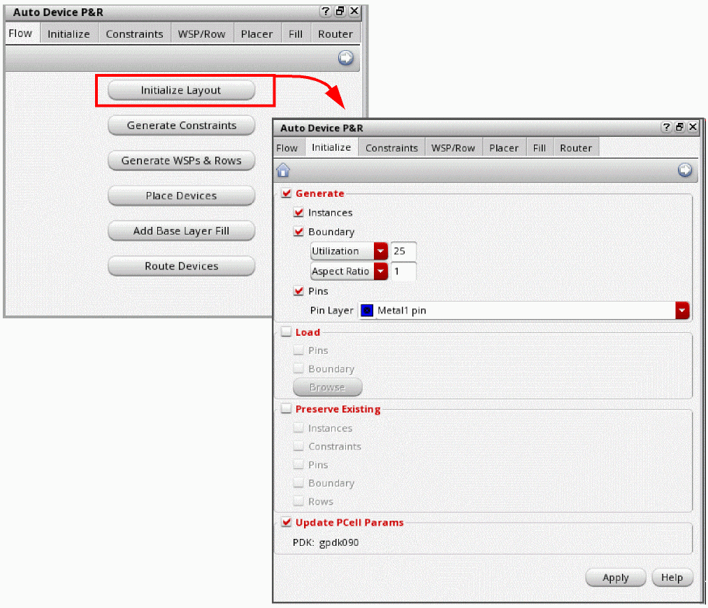 - Select Generate to enable the device generation options.
- Select Instances to generate all instances from the source schematic.
-
Select Boundary to generate a PR boundary as per the specified combination of Utilization and Aspect Ratio or Width and Height.
- Utilization and Aspect Ratio: Utilization specifies what percentage of the area within the PR boundary that can be filled with objects. The default is 25 percent. Aspect Ratio specifies the width-to-height ratio of the PR boundary. The default value is 1, which indicates a square boundary. An aspect ratio of 0.5 specifies a boundary twice as high as it is wide. A value of 2 specifies a boundary twice as wide as its height.
-
Width and Height: Width specifies the exact width of the PR boundary. Height specifies the exact height of the PR boundary. Width can be accessed from the Utility drop-down list and Height from the Aspect Ratio drop-down list.
- Select Pins to generate all the pins that are present on the selected Pin Layer in the source cellview. The default Pin Layer is the first metal layer in the layer stack.
- Select Load to enable the options in the Load section.
- Select Pins to load pins from another cellview. Click Browse to select the required cellview in the Library Browser.
- Select Boundary to load the PR boundary from another cellview. Click Browse to select the required cellview in the Library Browser.
- Select Preserve Existing to enable the options to preserve existing components.
- Select Instances to preserve existing instances. Additional instances in the source schematic are incrementally generated in the target layout.
- Select Constraints to preserve existing constraints when instances are not regenerated. This option is available only when Instances is selected.
- Select Pins to preserve existing pins. Additional pins in the source schematic are incrementally generated in the target layout.
- Select Boundary to preserve the existing boundary. The boundary is not regenerated.
- Select Row to preserve existing rows. The rows are not regenerated.
- Select Update PCell Params to update the parameters of the specified technology file. The PDK settings are loaded to prepare the Pcells to work in the placement and routing flow. Use this option to update the required layout-only Pcell parameters for specific PDKs and environment variables to facilitate placement and routing.
-
Click Apply to generate the selected objects in the layout canvas. All the instances and pins are generated below the PR boundary.
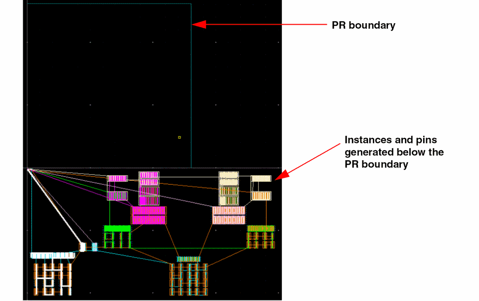
Environment Variable Settings
The following environment variable settings are applied during layout initialization:
|
|
|
WSP-aware snapping is turned on:
|
|
Modgen regeneration options are turned on:
|
|
Wire Editor Snapping Mode is set to WSP Pattern:
|
Generating Constraints and Constraint Groups
Device groups and constraints are central to the effective placement and routing of custom and analog layouts. After initializing the layout, the next step is to generate the required constraints. The automated device placement and routing flow supports automatic structure recognition using circuit finders, the organization of these structures into device groups, and the creation of corresponding constraints.
The automatic device placer and router honor these constraints during design placement and routing.
-
Click Generate Constraints in the Auto Device P&R assistant to display the Constraints tab.
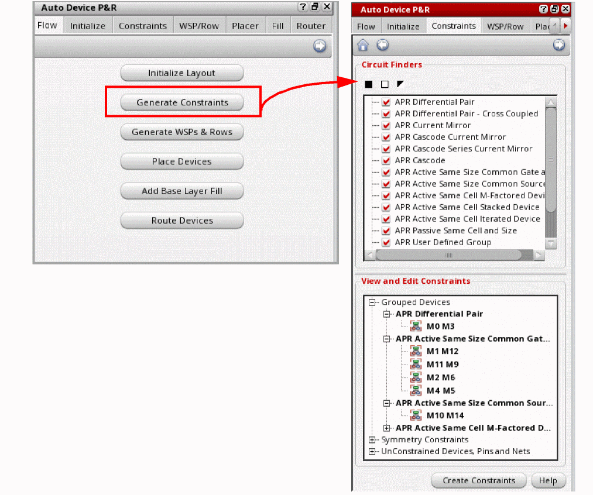 -
Select the Circuit Finders to be run to identify matching devices and device groups in the design. New topological constraints corresponding to the matching devices and device structures are generated.
The Auto-Device P&R assistant is pre-loaded with a set of Circuit Finders. Each finder analyzes the source data (schematic cellview) and identifies all devices and device groups that match the given criteria. For example, the finder Instances (Symmetry by Connectivity) identifies all symmetric instances, nets, and pins in the source cellview and groups them into a device group. The finder names have theAPR-prefix, which indicates that these finders are customized for the Auto-Device P&R flow. By default, all Circuit Finders are selected. Deselect the ones that you do not want to run.
You can use Enable All , Disable All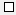, and Inverse Allto select the required circuit finders.
The sequence of the finders determines the sequence in which constraints are listed. You can reorder the finders by dragging them to the desired locations within the list.For devices to be added to device groups, they need to be registered for the Circuit Prospector assistant. For more information on device registration, see Constraint Manager Assistant Customization SKILL Commands.The following table describes the circuit finders.
For more information about circuit finders, see Finders in the Virtuoso Unified Custom Constraints User Guide. -
The View and Edit Constraints section lists all existing and new constraints and constraints groups based on the recognized structures. Click the + sign to expand each group. Right-click a constraint in this section to display a shortcut menu.
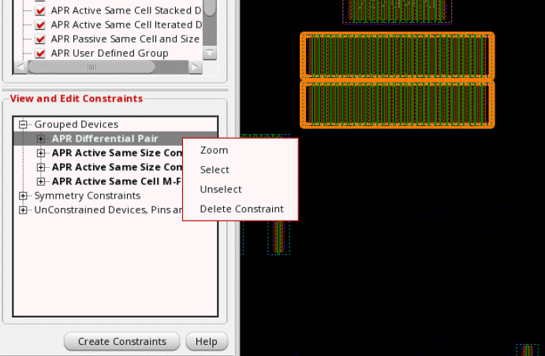Use the options in the shortcut menu to perform the following tasks: -
Click Create Constraints to search for all structures that have been enabled in the Circuit Finders pane following the order in which they are listed. All identified structures are organized in groups or Modgen constraints, along with symmetry information for symmetric structures, and are listed in the Constraint Manager.
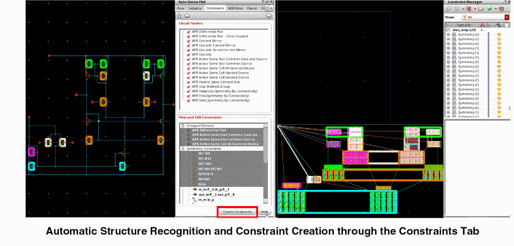
Expand the following categories in the View and Edit Constraints pane to view the corresponding entries:
- Grouped Devices: Lists structures for which groups have been created. The selected groups are highlighted in the layout and schematic windows.
- Symmetry Constraints: Lists the instances, nets, and pins on which symmetry constraints have been created.
- Unconstrained Devices, Nets and Pins: Lists all unconstrained devices in the layout. You can select the required devices and create groups or symmetry constraints on them by using the options in the shortcut menu.
Related SKILL Functions
You can use the following SKILL functions to instantiate the finders:
- ciActiveSameCellAndSizeIterator: Iterates over all the active same cell and size structures in the cellview and returns a list of corresponding devices.
- ciCascodeSeriesCurrentMirrorIterator: Iterates over all cascode series current mirror structures in the cellview and returns a list of corresponding devices.
- ciCommonGateAndSourceIterator: Iterates over all common gate and source structures in the cellview and returns a list of corresponding devices.
- ciCommonSourceIterator: Iterates over all common source structures in the cellview and returns a list of corresponding devices.
- ciHierarchicalSeriesIterator: Iterates over all the series structures in the cellview and returns a list of corresponding devices.
- ciCommonGateIterator: Iterates over all common gate structures in the cellview and returns a list of corresponding devices.
Creating a Modgen
Instead of creating standard constraints, the automated device placement and routing flow lets you create Modgens for the device groups identified by the circuit finders.
To create Modgens in the Auto Device P&R assistant:
-
Set the aprCreateModgens environment variable to
tas follows:envSetVal("layoutXL.AP" "aprCreateModgens" 'boolean t)
- Open the Constraints tab of the Auto Device P&R assistant.
-
Select the circuit finders that you want to run to identify device groups in the design.
For more information, see Generating Constraints and Constraint Groups. - Click Create Constraints.
The newly created Modgens are listed in the View and Edit Constraints section under the various categories.
Editing a Modgen
- Expand the required category in the View and Edit Constraints section on the Constraints tab of the Auto Device P&R assistant.
- Right-click the required Modgen.
-
Choose Edit Group.
The Auto Device Array form is displayed.
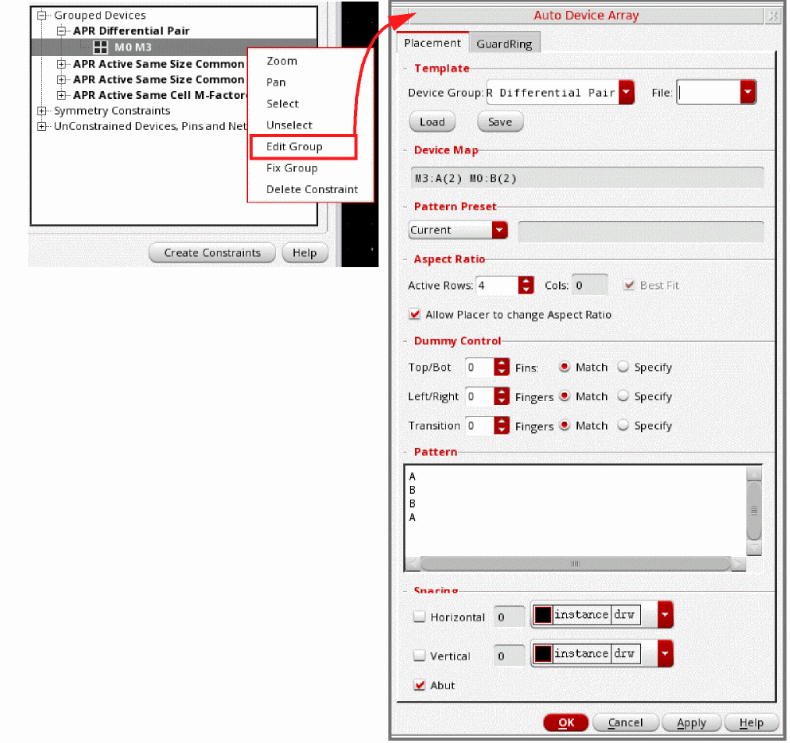The Auto Device Array is a unified interface that allows you to quickly create and edit Modgens. The form integrates the key options from the Modgen Placement and Modgen Routing toolbars. For more information, see Generating Modgens Automatically.
Deriving WSPs and Row Regions
Generating grids is an optional task, but is highly recommended to obtain better results. At advanced nodes, grids—including fins, WSPs, poly snap patterns, and rows—are important for the optimum placement and routing of custom and analog layouts. While row regions are used for device placement, WSP information is used for device routing and snapping.
The automated device placement and routing flow lets you derive WSPs and row regions automatically based on the device footprint, layers, and DRCs, with minimal user input. A row template is created automatically for all devices types, with the WSP period determining the row height. Row regions are created in the layout based on the row templates.
Before generating rows and grids, ensure that your designs has a uniform gate length to ensure a uniform poly pitch for device snapping.
To derive WSPs and row regions:
-
Click Generate WSPs & Rows in the Auto Device P&R assistant to open the WSP/Row tab.
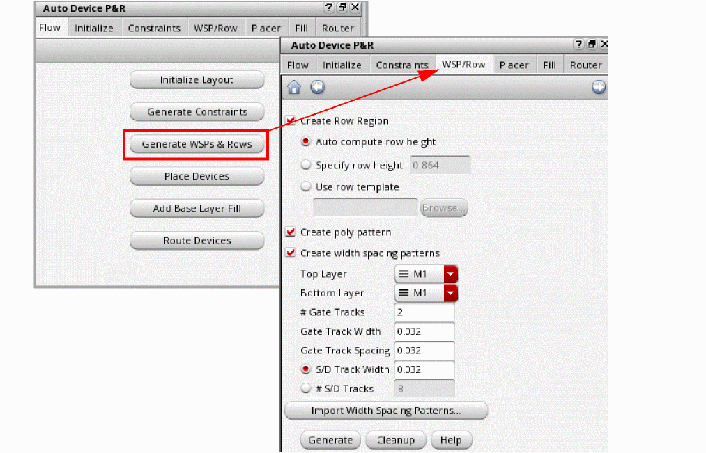 -
Select Create Row Region and specify the row height as follows:
- Auto compute row height: Automatically calculates the row height based on the maximum instance height and the heights of the gate, source, and drain tracks.
- Specify row height: Lets you specify a row height value.
-
Use row template: Lets you select an existing row template. Click Browse to display the Select Row Template form.
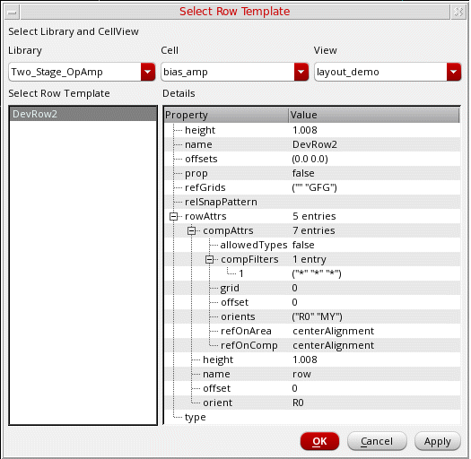
The name of the selected row template is displayed in the Use row template field.
The WSP period determines the height of rows in the auto-generated row template. All horizontal tracks have the same period. - Select Create Poly Pattern to generate a poly WSP grid in the selected row region.
-
Select Create Width Spacing Patterns to generate WSPs in the selected row region and specify the following related details:
- Top Layer and Bottom Layer: Specify the routing layer range for which WSPs must be created. WSP tracks are inserted in these and all intermediate layers.
-
#Gate Tracks: Specifies the number of gate tracks to be accommodated within a WSP track period. The default is
2. The specified number of gate tracks impacts the WSP period. Gate tracks are required for poly gate routing. -
Gate Track Width: Specifies the number of gate tracks to be added at the top and bottom of each row. The default value is
2, which specifies that two gate tracks are to be added to the top and bottom of each row. - Gate Track Spacing: Specifies the spacing between gate tracks. Each WSP track must accommodate the given number of gate tracks of the specified width and spacing. If the specified track width is higher than the default, specify a wider spacing value.
-
S/D Track Width and #S/D Tracks: Specifies the width and the number of source and drain tracks to be accommodated in each WSP track period. Select either S/D Track Width or #S/D Tracks and specify a value. The default value is automatically calculated based on the layer constraints and area of the S/D pins.
-
Instead of specifying the WSP parameters, you can import a WSP pattern from an existing WSP pattern file. Click Import Width Spacing Patterns to open the Select Patterns form, which lets you choose the required WSP Pattern file.
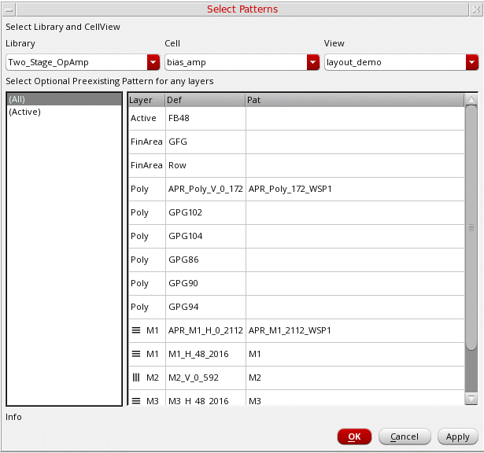Specify the following WSP parameters in the Select Patterns form:- Select the required Library, Cell, and View. All WSP patterns stored in the selected cellview are listed in the following section.
- Select the required WSP pattern in the left panel. The Layer, definition (Def), and pattern (Pat) for the selected WSP are displayed in the right panel.
- Click OK to select the required pattern and close the form.
WSP parameters from the selected WSP pattern file are loaded into the related fields on the WSP/Row tab. -
Click Generate.
WSP grids are generated in the layout canvas as per your specifications.
The Track Pattern assistant lists all the auto-created WSPs and rows with the APR- prefix to differentiate them from existing WSPs.
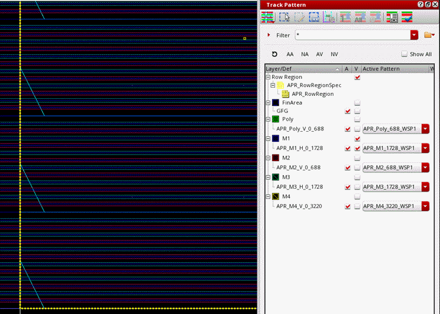
Return to top